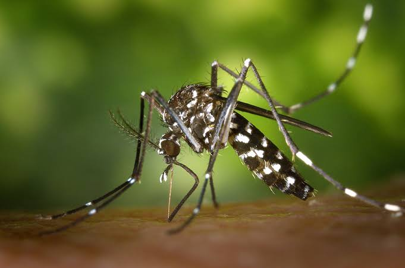
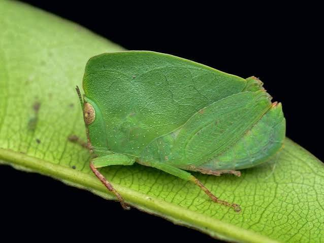

Insects Gallery
Mari mengenal berbagai jenis serangga yang ada di dunia!

Kupu-kupu
Kupu-kupu adalah serangga yang memiliki sayap indah dengan berbagai warna dan pola. Hewan ini mengalami metamorfosis sempurna yang dimulai dari telur, ulat, kepompong, hingga menjadi kupu-kupu dewasa. Kupu-kupu membantu proses penyerbukan bunga.

Lebah
Lebah adalah serangga yang hidup berkelompok dalam sebuah koloni. Hewan ini memiliki peran penting dalam membantu penyerbukan bunga saat mengumpulkan nektar dan serbuk sari. Lebah juga menghasilkan madu yang bermanfaat sebagai bahan makanan bagi manusia.

Semut
Semut adalah serangga kecil yang hidup secara berkelompok dan memiliki organisasi sosial yang teratur. Hewan ini dikenal rajin bekerja sama dalam mencari makanan dan membangun sarang. Semut mampu membawa benda yang beratnya berkali-kali lipat dari berat tubuhnya.

Capung
Capung adalah serangga yang memiliki tubuh panjang, dua pasang sayap transparan, dan mata besar. Hewan ini mampu terbang dengan cepat serta mengubah arah dengan mudah. Capung biasanya hidup di sekitar perairan dan memakan nyamuk serta serangga kecil lainnya.

Belalang
Belalang adalah serangga yang memiliki kaki belakang kuat untuk melompat jauh. Hewan ini biasanya berwarna hijau atau cokelat sehingga mudah bersembunyi di antara tumbuhan. Belalang mampu menghasilkan suara dengan menggesekkan bagian tubuhnya.

Kumbang tanduk
Kumbang tanduk adalah serangga yang memiliki tanduk khas pada bagian kepala atau dadanya. Tanduk tersebut digunakan oleh kumbang jantan untuk bersaing dengan kumbang lainnya. Kumbang ini dikenal memiliki kekuatan luar biasa dibandingkan ukuran tubuhnya.

Nyamuk
Nyamuk adalah serangga kecil yang memiliki tubuh ramping, dua sayap, dan belalai panjang. Nyamuk betina dari beberapa jenis mengisap darah untuk membantu perkembangan telurnya. Suara dengung nyamuk berasal dari kepakan sayapnya yang sangat cepat.

Belalang Daun
Belalang daun adalah serangga yang memiliki bentuk dan warna tubuh menyerupai daun. Kemiripan tersebut membantunya berkamuflase agar sulit ditemukan oleh predator. Hewan ini memiliki kemampuan menyamarkan diri dengan sangat baik di antara dedaunan.